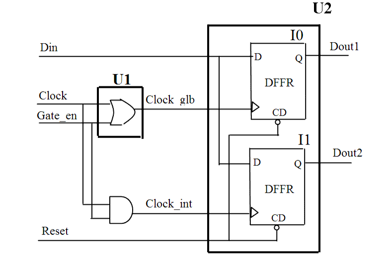

| Description | Grouping all gated clocks in a dedicated structure makes them easier to manage during timing analysis and clock tree insertion. |
| Policy | DESIGN |
| Ruleset | CLOCKS |
| Language | VHDL/Verilog |
| Type | Hardware |
| Severity | Error |
This is an example of invalid Verilog code, followed by a circuit diagram that illustrates the problem:
module ntl_clk08_top (Clock, Reset, Gate_en, Din, Dout1,Dout2 );
input Clock, Reset, Gate_en, Din;
output Dout1, Dout2;
wire Clock_int; // NTL_CLK08 fires, gated clock in top not isolated
wire Clock_glb; // OK -- Gated clock in one module and isolated
assign Clock_int = Clock & Gate_en; // gated clock Clk_int
Clk_gen U1( .Clock(Clock), .Reset(Reset),.Enable(Gate_en),
.Clock_global(Clock_glb) ); //gated global clock
Date_gen U2( .Clock1(Clock_int), .Clock2(Clock_glb), .Reset(Reset),
.Din(Din), .Dout1(Dout1), .Dout2(Dout2) );
endmodule
module Clk_gen ( Clock, Reset, Enable, Clock_global );
input Clock, Reset, Enable;
output Clock_global;
assign Clock_global = Enable ^ Clock ;
endmodule
module Date_gen ( Clock1, Clock2, Reset, Din, Dout1, Dout2 );
input Clock1, Clock2, Reset, Din;
output Dout1, Dout2;
reg Dout1, Dout2;
//DFFR -- flip-flop with reset
DFFR I0(.D(Din), .CP(Clock1), .CD(Reset), .Q(Dout1));
DFFR I1(.D(Din), .CP(Clock2), .CD(Reset), .Q(Dout2));
endmodule
